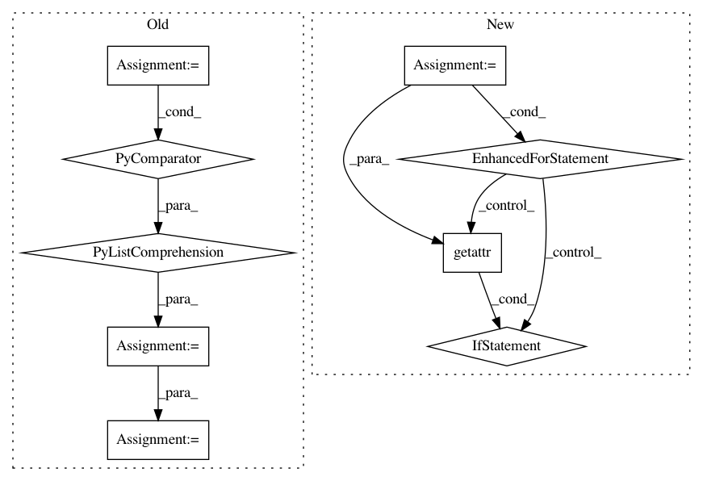

bb1b1c6e27b273a66135d02a04232835d5bfc3ca,allennlp/data/token_indexers/pretrained_transformer_indexer.py,PretrainedTransformerIndexer,tokens_to_indices,#PretrainedTransformerIndexer#Any#Any#Any#,59
Before Change
if not self._added_to_vocabulary and hasattr(self.tokenizer, "vocab"):
self._add_encoding_to_vocabulary(vocabulary)
self._added_to_vocabulary = True
token_text = [token.text for token in tokens]
indices = self.tokenizer.convert_tokens_to_ids(token_text)
return {index_name: indices}
@overrides
After Change
self._added_to_vocabulary = True
indices: List[int] = []
for token in tokens:
if getattr(token, "text_id", None) is not None:
// `text_id` being set on the token means that we aren"t using the vocab, we just use
// this id instead. Id comes from the pretrained vocab.
// // It computed in PretrainedTransformerTokenizer.
indices.append(token.text_id)
else:
raise KeyError(
Using PretrainedTransformerIndexer but field text_id is
not set for the following token: {token.text}
)
return {index_name: indices}
@overrides
def get_padding_lengths(self, token: int) -> Dict[str, int]:
In pattern: SUPERPATTERN
Frequency: 3
Non-data size: 9
Instances
Project Name: allenai/allennlp
Commit Name: bb1b1c6e27b273a66135d02a04232835d5bfc3ca
Time: 2019-11-19
Author: max.del.edu@gmail.com
File Name: allennlp/data/token_indexers/pretrained_transformer_indexer.py
Class Name: PretrainedTransformerIndexer
Method Name: tokens_to_indices
Project Name: keras-team/keras
Commit Name: 94dbc3042f5a85b399f5ce2859d4e8fbafd235b9
Time: 2017-07-06
Author: me@taehoonlee.com
File Name: tests/keras/backend/backend_test.py
Class Name:
Method Name: check_single_tensor_operation
Project Name: keras-team/keras
Commit Name: 94dbc3042f5a85b399f5ce2859d4e8fbafd235b9
Time: 2017-07-06
Author: me@taehoonlee.com
File Name: tests/keras/backend/backend_test.py
Class Name:
Method Name: check_two_tensor_operation